Welcome to the Public Service Center
Access City of Minneapolis services and resources below. Tap the button to get started.
Need help or an interpreter? Ask a staff member at the counter.
Spanish / Español
¿Necesita ayuda o un intérprete? Hable con el personal en el mostrador.
Somali / Soomaali
Ma u baahan tahay caawimaad ama turjubaan? La hadal shaqaalaha miiska.
Hmong / Hmoob
Xav tau kev pab los yog neeg txhais lus? Hais rau neeg ua haujlwm ntawm lub txee.
Vietnamese / Tiếng Việt
Cần hỗ trợ hoặc phiên dịch? Hãy nói với nhân viên tại quầy.
Lao / ລາວ
ຕ້ອງການການຊ່ວຍເຫຼືອຫຼືນາຍພາສາ? ກະລຸນາເວົ້າກັບພະນັກງານທີ່ເຄົາເຕີ.
Korean / 한국어
도움이나 통역이 필요하신가요? 카운터 직원에게 말씀해 주세요.
Chinese / 中文
需要幫助或翻譯服務？請向櫃檯人員詢問。
Amharic / አማርኛ
እርዳታ ወይም ተርጓሚ ያስፈልግዎታል? እባክዎ በቆጠቢ ጠረጴዛ ሰራተኞቹን ይጠይቁ።